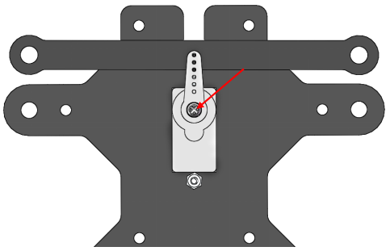
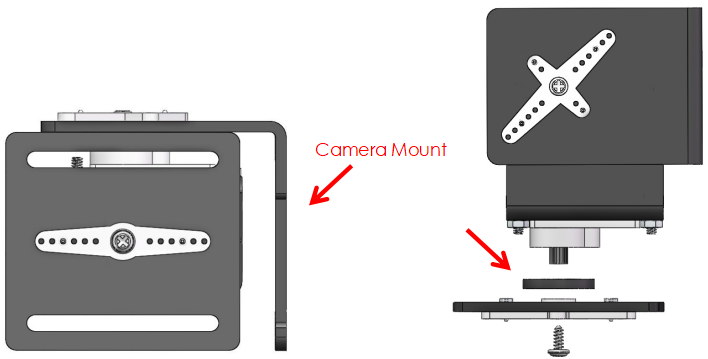
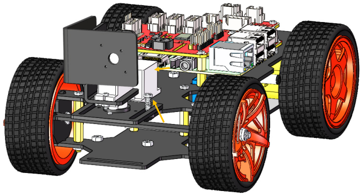

Continue to Assemble¶
警告
Please do forget to put in the battery and slide the power switch to ON, then keep servo-install running in the whole process of assembly.
Assemble the Steering Servo¶
Mount the Steering Servo to the Upper Plate with two M2x8 Screws and M2 nuts (pay attention to the direction of the servo wires):

Front Half Chassis¶
The Rocker Arm is facing straight ahead, and then inserted into the Servo shaft, and then fixed with Rocker Arm Fixing Screw (the shortest).
Mount the wheels onto the Upper Plate carefully.

Assemble the Front Half Chassis with four M3x25 copper standoffs and M3 nuts.

Then put the assembled Front Half Chassis onto the Upper Plate with standoffs aligned with the holes.

Hold them carefully, turn upside down, and fasten the standoffs and Upper Plate with four M3x8 screws.

Assemble the assembled Pan-and-tilt Plate, Gasket Plate and Camera Mount Plate with the Rocker Arm Fixing Screw in a fixed angle as shown below:
注釈
Do not rotate the servo by hands in case of breaking the servodown.

Similarly check that the servo shaft has spun to 90 degrees. Then assemble the Pan-and-tilt Base Plate with the Rocker Arm Fixing Screw and the Gasket Plate in the angle as shown below.
Assemble the Pan-and-tilt Plate to the car with two M3x10 screws and the M3 nuts.
Assemble the Camera¶
Take out the camera and nip it to the Camera Mount. Connect its USB cable to the USB port on the Raspberry Pi.
So now, the whole assembly is DONE! Congratulations! You can power off the car now! Don’t forget to charge your batteries.